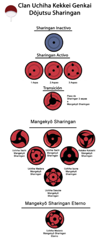
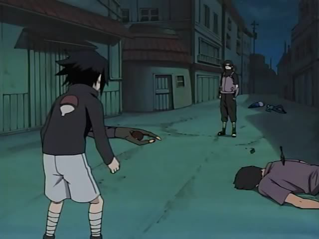

| El clan Uchiha es un clan ninja del manga y anime Naruto. Fue considerado como uno de los clanes más poderosos de la Aldea Oculta de la Hoja, pero ahora está casi extinto después de los acontecimientos de la masacre. El Sharingan es la técnica de línea sucesoria que les caracteriza, además de un especial y gran chakra muy bueno en las técnicas de fuego. |
 |
| El Sabio de los Seis Caminos predicó el camino ninja y trato de traer la paz al mundo. Cuando el sabio estaba en su lecho de muerte tuvo que elegir a un sucesor, encomendó la tarea a uno de sus dos hijos. El hermano mayor nació con los ojos del sabio, la fuerza del chakra y la energía espiritual, creyendo que la fuerza era el único medio para traer la paz. Mientras que el menor nació con el cuerpo del sabio, la fuerza del corazón y la energía física, dándose cuenta de que el amor era la clave para conseguir la paz. El sabio creyó que en lugar del hermano mayor que solo buscaba el poder, el hermano menor que buscaba el amor era más apropiado para sucederle, y así lo eligió. El hermano mayor no acepto la decisión y abrumado por el odio, sembró el disentimiento contra su hermano menor. |
 |
KonohaAntes de la fundación de la aldea, en una época de guerra entre clanes ninja que quiere obtener aumentar su territorio y eran contratados cual mercenarios, dos clanes sobresalieron entre todos, los Senju y los Uchiha. Los Uchiha poseen un enorme y especial chakra además del Sharingan. Entre estas personas especiales, dos hermanos sobresalieron entre todos, despertaron su sharingan y su rivalidad les llevó incluso a despertar el Mangekyö Sharingan a costa de un sacrificio. Ambos se hicieron con el control del clan y el mayor, Madara Uchiha tomó el liderazgo llevando al clan a innumerables victorias.No obstante algo le ocurrió al cuerpo de Madara, el uso de su Mangekyö Sharingan lo llevó a estar postrado en una cama, desesperado por hallar la luz su hermano Izuna le ofreció sus ojos, lo que le permitió obtener un Mangekyö Sharingan eterno, aunque tiempo después fue juzgado por su clan. La lucha y la rivalidad entre los Senju y los Uchiha aumentó y las batallas eran constantes, Madara era el ánico que podía enfrentarse al poderoso Hashirama y finalmente ante el desgaste de ambos bandos, se firmó la paz. Madara no la deseaba pero aceptó ante el deseo de su gente, ambos clanes fundaron en el País del Fuego una aldea oculta, Konoha, con el liderazgo consensuado de Hashirama, al que se le dio el título de Hokage y el sobrenombre de Shodaime. Madara temiendo que la desventaja de su clan los llevara a la ruina protestó, pero su propio clan le dio la espalda y le llamó avaricioso, echándole en cara la mutilación de su hermano, Madara abandonó la aldea entonces para volver posteriormente y desafiarla, tras la épica batalla con Hashirama en el Valle del Fin, el poderoso Uchiha fue derrotado y dado por muerto. En Konoha el sucesor de Hashirama, su hermano menor y segundo hokage Tobirama Senju como muestra de confianza le dio el poder policial al clan Uchiha al tiempo que vigilaba con ANBU a dicho clan. MasacreAños después, tras el ataque de Kyübi a la aldea y el sacrificio de Yondaime (padre de naruto), Konoha comenzó a sospechar que un Uchiha estaba detrás del ataque. El gobierno de la villa (consejeros y Danzö) desautorizaron a Sandaime, trasladando a los Uchiha a un rincón de la aldea para que pudieran ser vigilados más fácilmente. Es así como los Uchiha comprendieron las advertencias de años de Madara Uchiha. Es por eso que comenzarón a planear un golpe de estado para cambiar esta situación e incluso infiltraron a un espía entre los ANBU, el propio hijo del líder, el portentoso Itachi Uchiha.Sin embargo este odiaba la guerra y comprendiendo la inestabilidad que produciría una lucha interna por el poder, prefirió ser leal a Konoha. De nuevo Sarutobi es desautorizado, y para evitar una sublevación que sería de crear otra guerra, Itachi recibió la orden de acabar con los Uchiha, éste accede y contacta a quien se creia que era Madara Uchiha pero en realidad es Tobi, para pedirle que a cambio de destruir al clan, dejase en paz al resto de la villa, éste accede y tras despertar Itachi su Mangekyö Sharingan, todo el clan es asesinado salvo su hermano menor Sasuke Uchiha. Itachi logra que Danzü y los consejeros respeten a este Uchiha bajo la amenaza de divulgar la verdad y dar información clasificada a las otras aldeas y hace que Sandaime le oculte la verdad al tiempo que lanza a su hermano a un camino de odio y venganza para fortalecerlo. Itachi finalmente abandona la villa como un criminal extremadamente peligroso y entra en la Organización Akatsuki de Madara para proteger la Villa desde dentro. |